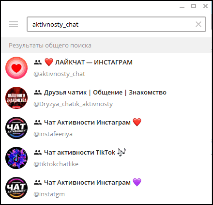
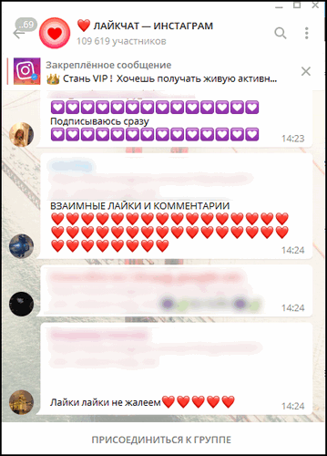
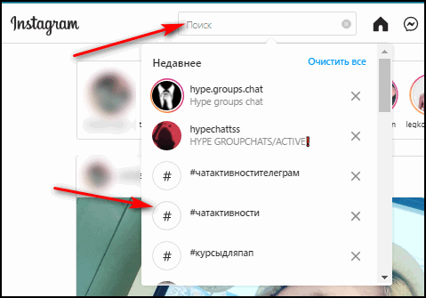
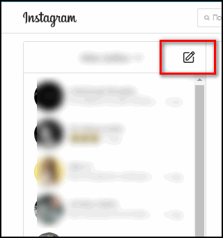

Как работают чаты активности в Инстаграме

Чат активности в Инстаграме* – это специальная беседа, где пользователи могут обмениваться лайками и комментариями для своих учетных записей. Вступление в такой чат обещает пользователю высокую активность в профиле, но временную.
Что такое чат активности в Инстаграме*
Чаты для повышения актива необходимы для того, чтобы повышать взаимодействия в аккаунте. Такой способ обладает преимуществом перед стандартной накруткой – лайки и комментарии оставляют живые пользователи.
- при постоянном участии снижается выдача в рекомендациях по нужной стране и городу;
- активность временная, пока владелец профиля подписан на чат-активности;
- не всегда участники подписываются.
- групповой чат в Инстаграме*;
- диалоги в телеграме.
Плюсы и минусы участия
Чтобы взвесить «за» и «против», нужно рассматривать чат-активности как дополнительный способ продвижения. Такой вариант не может быть основным по той причине, что он временный и не приносит вывода в ТОП.
- возможность быстро получить подписчиков, лайки и комментарии;
- поиск содружественных аккаунтов и просто новых друзей;
- изучение конкурентов, новые идеи от других блогеров;
- расширение аудитории посредством вывода в ТОП на иностранную/русскоязычную аудиторию.
Проще говоря, такой способ продвижения подойдет пользователям, которым не важна привязка к геолокации. К примеру, общий информационный блог, подписчиком которого могут быть все жители страны.
- нет направленности на целевую аудиторию: любой возраст, пол, страна и язык;
- вероятность блокировки от Инстаграма* за превышение суточных лимитов;
- резкое снижение активности после того, как владелец блога перестанет участвовать;
- потом придется чистить неактивных подписчиков, которые будут снижать охваты.
Владельцам интернет-магазинов, блогам экспертов такой вариант продвижения не подойдет. Потому что в их случае, нужно рассчитывать целевую аудиторию.
Найти чаты активности в Телеграме
В мессенджере Телеграм можно найти чаты, где пользователи обмениваются лайками и комментариями. Это стандартная групповая беседа, где можно размещать свои объявления, обмениваться лайками с другими пользователями. Популярные чаты активности в Телеграме:
- @aktivnosty_chat. Русскоязычный чат, где можно размещать свои объявления неограниченное количество в сутки;
- @insta4at. Небольшая группа, нужно присоединиться, чтобы размещать записи;
- @instaChatLS. Нужно выполнить пару заданий, чтобы стать активным участником.

Зачастую, чаты создают самостоятельно и позже приглашают в них знакомых, делают пост в социальной сети. Если воспользоваться хештегом «чатыактивности», то пользователь найдет публикации с поиском участников. Ссылки выдают только тем, кто планирует участвовать в дальнейшем и приглашение конфиденциально. В Телеграме можно подключиться к одному из чатов, который предназначен для повышения активности в аккаунте. Как подключиться:- Зайти в Телеграм – Переписки.
- Вписать название выбранной группы.

- Присоединиться – Опубликовать в группе сообщение.
В некоторых сообществах есть особенности размещения и правила. Участники должны соблюсти все требования, чтобы в дальнейшем размещать рекламу постоянно.
Через Инстаграм*
В самой социальной сети можно найти страницы, которые предлагают продвижение страницы и стать участником. Но в представлено два варианта, как принять участие:
- воспользоваться приглашением в платный чат;
- с помощью хештега искать публикации.
Во втором случае, определенные страницы или чаты, которые сразу подключат к переписке, нет. Поэтому пользователю стоит воспользоваться глобальным чатом, чтобы пообщаться с другими блогерами и запустить продвижение. Как искать чаты для продвижения:
- Зайти в Инстаграм* – перейти к глобальному поиску.
- Вписать в поиске: «Чат активности» - посмотреть, какие предложения появились.
- Выбрать один из бесплатных – перейти.

- Написать в комментарии: «Хочу участвовать».
- Подождать, пока администратор ответит.
После этого, пользователя взаимно добавят в друзья и он сможет участвовать в групповых чатах. Но есть и другой вариант: платные переписки, где размещают ссылки. Такие базы зачастую предназначены для небольшой аудитории и не всегда эффективны.
Как подключиться к иностранным чатам активности
Чаты в Инстаграме* для поднятия активности есть и зарубежные. По отзывам постоянных участников, такой способ эффективнее, чем русскоязычные. Но разница состоит только в масштабах, где в иностранных обычно больше активных пользователей. Как найти зарубежные чаты в Инстаграме*:
- @hypegroupchatt;
- @hypechattss;
- @hypegchats;
- • @ hypechat._/;
- @hype.groups.chat.
Чтобы присоединиться, пользователю нужно подать заявку с помощью Директа. Предварительно, нужно подписаться на страницу.
Создание своего чата активности
Проще всего работать со своим чатом: создать групповой диалог и пригласить других пользователей. Но для этого владельцу пригодится небольшая реклама, способы продвижения своего канала. Чтобы привлечь аудиторию в чат активности telegram:
- Создать групповую беседу – добавить название, соответствующее тематике.
- Скопировать ссылку и вставить в описание в своем Инстаграме*.
- Рассказать об этом подписчикам.

- Использовать дополнительные площадки (запись видео в Tik Tok, Facebook*), чтобы поделиться на широкую аудиторию.
После того, как в чате взаимной активности в Инстаграме*, появятся первые подписчики, можно создавать правила и размещать первые объявления. В зависимости от количества аудитории и типа услуг, владелец профиля может потребовать и платное приглашение. Но в таком случае нужно проработать оформление, собрать аудиторию не менее 10 000 подписчиков.